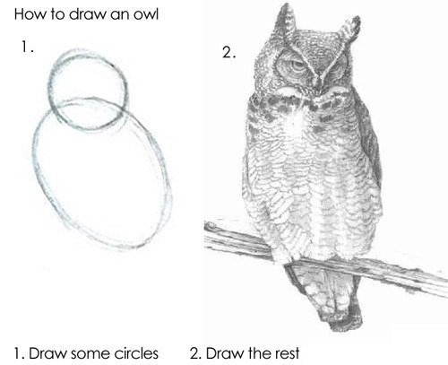
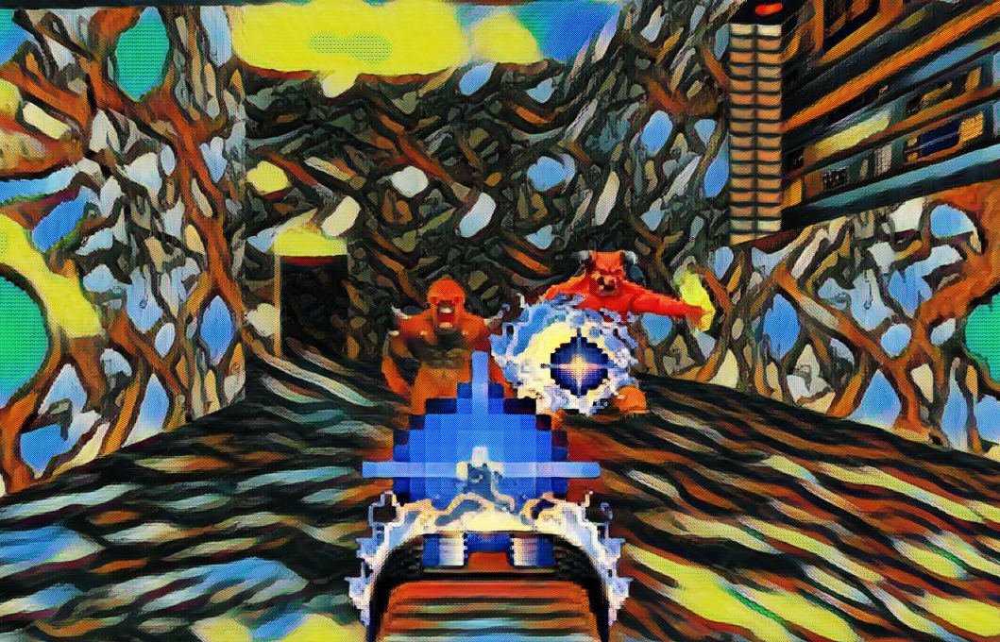

I work on software.
Another Saturday, another project.
Let's make a simple raycasting engine—a fun application of math and art—just like the early 3D-ish video games from the 1990s. I'll build it incrementally using JavaScript so that you can try each step on this page as we go along.
To test out each result, click on the canvas and use WASD to control the camera.
We first start with a map. It is a 2D array of 0s representing open space and 1s representing walls. Imagine that it is a top-down view of the world.
this.map = [
[1, 1, 1, 1, 1, 1, 1, 1, 1],
[1, 0, 0, 0, 0, 0, 0, 0, 1],
[1, 0, 1, 0, 1, 0, 1, 1, 1],
[1, 0, 0, 0, 0, 0, 0, 0, 1],
[1, 0, 1, 1, 0, 1, 0, 0, 1],
[1, 0, 1, 0, 0, 1, 0, 0, 1],
[1, 0, 0, 1, 0, 1, 1, 1, 1],
[1, 0, 0, 0, 0, 0, 0, 0, 1],
[1, 0, 1, 0, 0, 0, 0, 0, 1],
[1, 1, 1, 1, 1, 1, 1, 1, 1]
];
The raycasting method simulates a 3D environment by casting rays from a player's viewpoint into the 2D map to find the distance to the nearest wall along each ray. These distances are then used to calculate the heights of vertical "slices" of walls to draw on a 2D canvas. By iterating through multiple rays across the player's field of view, the method generates a series of these wall slices, which collectively create the illusion of a 3D environment. Objects appear smaller as they are farther away, so wall slices drawn shorter give the impression of being more distant, creating a 3D effect.
It doesn't take much code. Here is how we handle an individual ray:
castRay(rayAngle) {
let x = this.player.x;
let y = this.player.y;
let dx = Math.cos(rayAngle);
let dy = Math.sin(rayAngle);
// Increment x and y until we hit a wall
let i = 0;
while (this.map[Math.floor(y)][Math.floor(x)] === 0) {
x += dx * 0.1;
y += dy * 0.1;
i++;
if (i > 400) break; // Prevent infinite loops
}
const distance = Math.sqrt((x - this.player.x) ** 2 + (y - this.player.y) ** 2);
const wallHeight = 300 / distance;
return { distance, wallHeight };
}
Then we draw walls based on the distance that the rays traveled:
drawWallSlice(i, wallHeight, sliceWidth) {
for (let j = 0; j < wallHeight; j++) {
let yPosition = Math.floor(300 - wallHeight / 2 + j);
this.ctx.fillStyle = `rgb(180, 0, 180)`;
this.ctx.fillRect(i * sliceWidth, yPosition, sliceWidth, 1);
}
}
All of our rays and walls are sourced from this function:
raycast() {
const rays = 200;
const screenWidth = 800;
const sliceWidth = screenWidth / rays;
const angleStep = this.player.fov / rays;
// Walls
for (let i = 0; i < rays; i++) {
const rayAngle = this.player.angle - (this.player.fov / 2) + i * angleStep;
const { distance, wallHeight } = this.castRay(rayAngle);
this.drawWallSlice(i, wallHeight, sliceWidth);
}
}
I wired up the basic infrastructure to redraw the screen and accept WASD input that moves the player. Try it by clicking the canvas and using WASD:
It works! We can improve it though.
Everything is a flat color without texture, which makes it difficult to perceive distance. Let's add a simple pattern to the walls.
drawWallSlice(i, wallHeight, ditherPatternSize, sliceWidth) {
for (let j = 0; j < wallHeight; j++) {
let yPosition = Math.floor(300 - wallHeight / 2 + j);
// Create a dithering pattern based on the pixel's coordinates
let dither = ((i + yPosition) % ditherPatternSize < ditherPatternSize / 2) ? 10 : 0;
// Adjust color
let adjustedColor = 180 + dither;
this.ctx.fillStyle = `rgb(${adjustedColor}, 0, ${adjustedColor})`;
this.ctx.fillRect(i * sliceWidth, yPosition, sliceWidth, 1);
}
}
Try it with the newly improved walls:
A little better but it is still lacking.
We can use the distance to adjust the wall color to differentiate near walls and far walls.
drawWallSlice(i, distance, wallHeight, ditherPatternSize, sliceWidth) {
// Calculate darkness based on distance
const darknessFactor = 1 + (distance / 4);
for (let j = 0; j < wallHeight; j++) {
let yPosition = Math.floor(300 - wallHeight / 2 + j);
// Create a dithering pattern based on the pixel's coordinates
let dither = ((i + yPosition) % ditherPatternSize < ditherPatternSize / 2) ? 10 : 0;
// Adjust color
let baseColor = 180 + dither;
let adjustedColor = Math.floor(baseColor / darknessFactor);
this.ctx.fillStyle = `rgb(${adjustedColor}, 0, ${adjustedColor})`;
this.ctx.fillRect(i * sliceWidth, yPosition, sliceWidth, 1);
}
}
Now give it a whirl again:
It is starting to look 3D!
As you can see, just adding a few lines of code at a time makes our environment look much better. This time, we will add a sky and a ground fill color.
There actually isn't a "sky" or "ground", we are just going to draw the top half of the screen one color and the bottom half a different color. Then we will draw all the walls along the horizon, and bam!
We'll update the raycast function:
raycast() {
const rays = 200;
const screenWidth = 800;
const sliceWidth = screenWidth / rays;
const angleStep = this.player.fov / rays;
const ditherPatternSize = 8;
// Sky
this.ctx.fillStyle = 'rgb(20, 0, 20)';
this.ctx.fillRect(0, 0, 800, 300);
// Ground
this.ctx.fillStyle = 'rgb(60, 0, 60)';
this.ctx.fillRect(0, 300, 800, 300);
// Walls
for (let i = 0; i < rays; i++) {
const rayAngle = this.player.angle - (this.player.fov / 2) + i * angleStep;
const { distance, wallHeight } = this.castRay(rayAngle);
this.drawWallSlice(i, distance, wallHeight, ditherPatternSize, sliceWidth);
}
}
Enjoy a stroll:
Our map is always the same which gets boring fast. We should procedurally generate a new map every time.
I did this by using a standard depth first search approach to generating a maze. It ensures that all the areas are connected, but it ends up being a narrow and windy maze. That can be addressed by randomly adding "rooms" on top of the maze.
placeRoom(map, x, y) {
// Fill the 3x3 area with 0s
for (let dx = 0; dx < 3; dx++) {
for (let dy = 0; dy < 3; dy++) {
map[y + dy][x + dx] = 0;
}
}
}
Run around a bit then refresh the page to see a different level:
What do you think our engine is missing now?
Given that everything in the environment is the same, I think we need a mini map. A top-down view of the environment will help us keep track of where we are and where we might want to go. We already have the map data, we just need to visualize it in a different way.
We can quite literally draw our map variable as a grid in the corner of the screen that updates based on the player's location.
// Draw the map
for (let y = yStart; y < yEnd; y++) {
for (let x = xStart; x < xEnd; x++) {
const wall = this.map[y][x];
const color = wall ? 'rgb(150, 0, 150)' : 'rgb(0, 0, 0)';
this.ctx.fillStyle = color;
this.ctx.fillRect((x - xStart) * miniMapScaleX + offsetX, (y - yStart) * miniMapScaleY + offsetY, miniMapScaleX, miniMapScaleY);
}
}
Run through this entire level and see how the mini map works:
Admit it. That is cool.
There are infinite more features that we could add from here. Different wall textures, doors, objects, and then we could add an objective to make it into a game. We have a solid state though.
I'll leave you at step 7 with my favorite instructions:
And if you follow that, then soon your raycasting engine will be capable of producing this:
